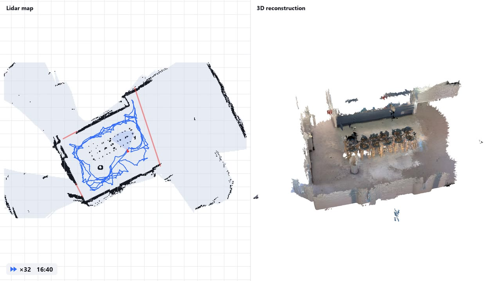
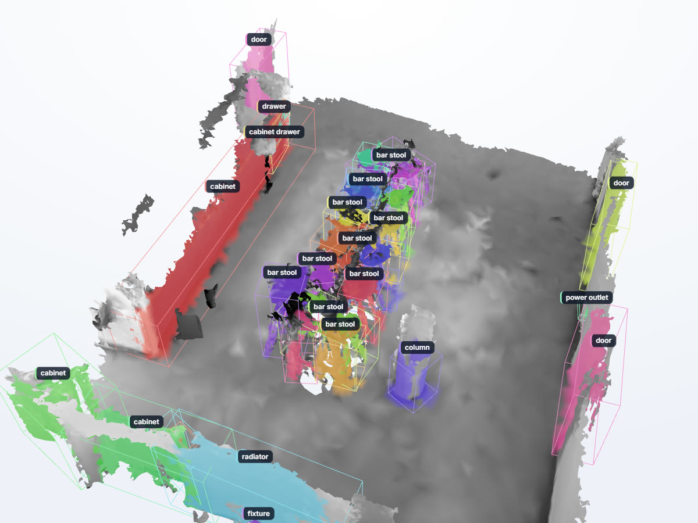
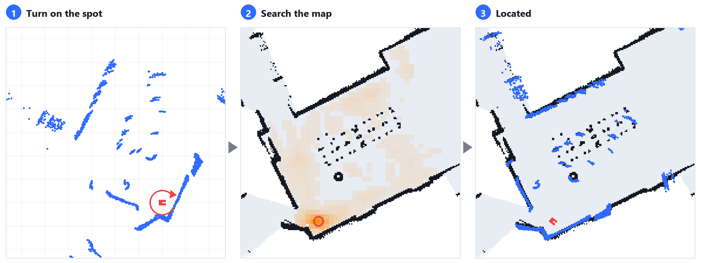
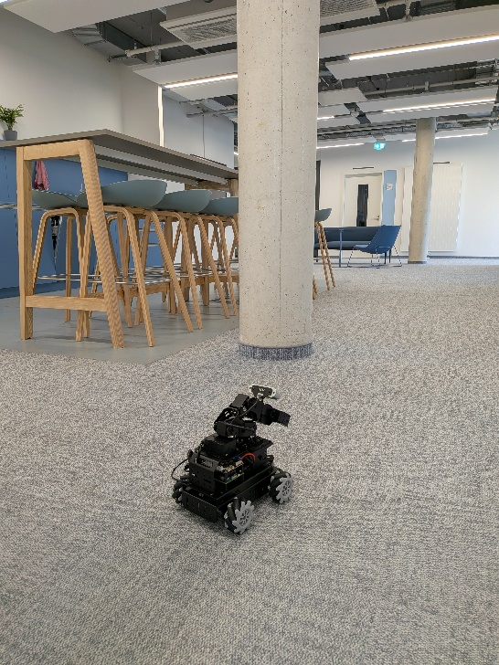

Scan, Label, Act: A first step towards robots that assist medical staff
Abstract
Our long-term aim is to study humanoid robots in medical environments, where a robot has to find its way in rooms it has not seen before and work with the objects in them. As a first step, we build a minimal baseline on a low-cost wheeled robot with an arm, the Hiwonder LanderPi. The robot explores an unknown room autonomously and records lidar and RGB-D data. From this recording we build a 2D map, a 3D reconstruction and a set of labelled 3D objects. The labelled room then serves as the robot's world model. The robot localizes itself in it, navigates to objects, searches for items with its camera, picks up small objects and carries out instructions in natural language through a vision-language model that calls these skills as tools. No component is trained for a specific room or task, and the robot itself only streams sensor data and receives commands. We intend the approach to be general and not tied to one robot. The LanderPi is the platform we start with.
Method

1Exploration
The robot maps the room with its lidar and selects viewpoints until the depth camera has observed every reachable surface.
Example runs ↓

2Reconstruction and labelling
Keyframes are fused into a mesh. A vision-language model lists the objects, an open-vocabulary detector locates them, and the detections are merged into 3D objects.
Interactive model ↓

3Localization
In a known room, the lidar scans of one rotation in place are matched against the stored map.
Example ↓
4Task execution
A vision-language model plans the task and calls navigation, visual search and grasping skills as tools.
Demonstrations ↓
5Real2Sim In progress
The scanned rooms are already used as simplified simulations for testing. A physical simulation with realistic rendering, in which the robot can be trained, is work in progress and will be added soon.
Exploration runs
The robot explores an unknown room on its own while a 2D map is built from its lidar. A live model of what the depth camera has seen marks the surfaces of floor, walls and furniture that are still missing, and the robot drives to viewpoints for them along the shortest route. It stops when no unexplored area is left and every reachable surface has been seen or given up after two visits. Below, the best run in each of the three rooms we scanned is replayed with its map, the path driven and these surfaces.
- Seen by the camera
- Not seen yet
- Given up after two tries
- Path driven
Labelled 3D reconstruction
After the run, the recorded colour and depth images are fused into a 3D mesh of the room, each image placed by the robot's position and the pose of its arm. The labelling then finds the objects in this mesh. Qwen lists what the room contains, YOLOE finds these objects in the images, and Qwen checks and names the resulting 3D objects, as detailed below the model. The kitchen shown here comes from one autonomous run. Drag to rotate the model and select an object to see its label and description.
How the objects are labelled
- KeyframesRGB-D
About 100 to 170 views that together cover the room.
- Word listQwen
Qwen is asked what is in the room and lists furniture, doors, fixtures and similar.
- SegmentationYOLOE
YOLOE finds each word of the list in every keyframe and segments it.
- Lift to 3DDepth
The masks become 3D points with the measured depth, and the views are merged into objects.
- CheckQwen
Qwen decides for nearby objects whether they are the same, part of another or different, and then names each object.
- Scene filescene.json
Every named object with its description and position. This is the robot's world model.
Localization
Placed in a room it has scanned before, the robot first has to find out where it stands. It turns once on the spot, and the lidar scans of this turn are compared with the stored map at every place the robot could stand. The best match gives its position and heading, and while it drives, every new scan keeps this position up to date.
Left, the scans of one turn on the spot. Middle, how well they fit at each place of the map. Right, the result, with the scans on the map's walls.
Language-instructed tasks
People give the robot its tasks in a chat. It answers, asks back when something is missing and acts in the room. A vision-language model receives each instruction together with the room's object list, its walls and the robot's status. It plans the task and calls the robot's skills as tools, such as driving to an object, watching for an item with the live detector, searching an area, or picking up a small object with the camera on the gripper. Each skill reports its result, so the model can decide on the next step. All runs are autonomous after the instruction.
UserThere is a cup left of the outlet. Please find and approach it
RobotI'll start looking for the cup with the camera, then drive toward the outlet area.
watch_fordrive_to_object
RobotThe cup was spotted on the way, left of the outlet as you said. Approaching it now.
approach_found
RobotDone. The cup was found just left of the power outlet, and the robot is now stopped about 20 cm in front of it, facing it with the camera on it.
The model first calls watch_for, which runs YOLOE on the live camera images with
the word cup and a few synonyms. It then sends the robot towards the power outlet, a target from the room's
object list, with drive_to_object. YOLOE spots the cup on the way, its depth places it in the room,
and the drive stops. With approach_found the robot drives up to the cup and stops 0.2 m in
front of it, 31 s after the instruction. The video runs at twice the speed.
Earlier in this chat
UserSee the small red cube in front of you? Please pick it up
watch_forsearch_hereapproach_foundpick_up_object
RobotFound and picked up the small red cube (~29 mm), just in front of you. Where should I put it down?
UserNow place it down a few centimeters behind you please
turn_by_degreesput_down_object
RobotDone. I turned around and set the red cube down a few centimetres behind where it stood.
In the video
UserI moved it a bit. Please pick it up again
watch_forsearch_here
approach_found
pick_up_object
RobotPicked it up again, you had moved it a bit to the robot's left of where it was before. Where to next?
The model calls watch_for and search_here. YOLOE finds the cube in the
camera images, an image check with Qwen confirms that it is the requested item, and approach_found
drives the robot up to it. pick_up_object then steers by the camera on the gripper. Since camera
and gripper are rigidly connected, the gripper is right above the cube when the cube appears at a taught spot
in the image. Base and arm move until it sits there, then the arm goes down in guarded steps, closes the
gripper and lifts the 30 mm cube, 66 s after the instruction.
The chat messages are quoted from the runs' logs, shortened by leaving out positions.

Platform
The Hiwonder LanderPi has a mecanum-wheeled base with a 2D lidar, an RGB-D camera on a five-servo arm with gripper, and a Raspberry Pi 5 running ROS 2. The robot streams its sensor data and receives commands. All processing runs off-board, and language models are queried through an OpenAI-compatible server.